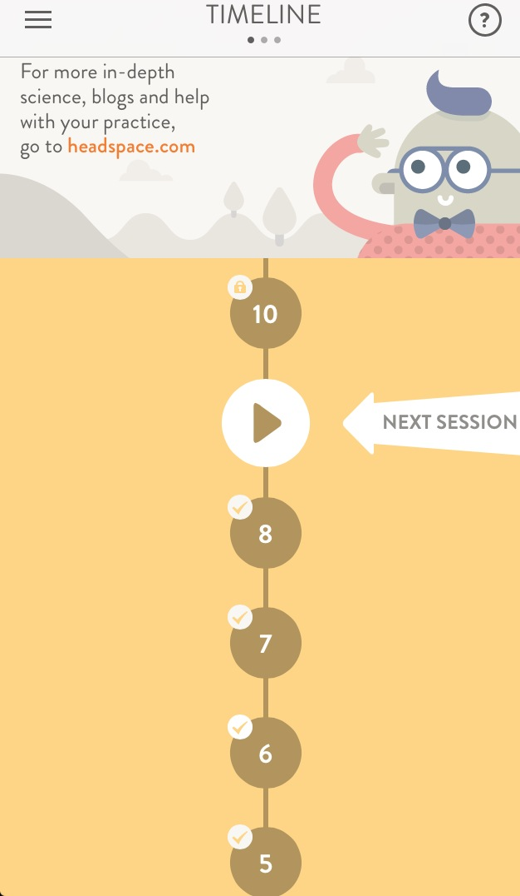

| Description |
Innovative |
Useful |
|
| iOS meditational app |
The first ten sessions begin with animations to demonstrate best meditational practices and transition right into the meditational session. |
The product is useful because it provides structured lessons on meditating rather than just a timer. The product also provides instructions on how to apply lessons after the meditation session is done and to make you more aware. It is also useful because the app is the only equipment you need to perform the task. There are specific sessions focused on anxiety or for SOS situations. |
 |
| Unobtrusive |
Honest |
Environmentally Friendly |
| There are a few email prompts to purchase after the free take 10 sessions which are slightly obtrusive. However, the app itself is unobtrusive. |
Headspace gives you 10 free sessions to try it out before purchasing. This offer gives the consumer the opportunity to get a feel for it before committing and paying. |
The content encourages you to think about your motivations for doing meditation and encourages you to think how it will positively impact those around you.Also there's a lack of visual pollution. |
| Understandable |
Little Design as Possible |
Long Lasting |
| The product is quite self explanatory when it comes to choosing sessions, ending a session, pausing a session. |
Headspace makes the goal clear from the start with the logo -an orange colored circle. The goal is not to visually stimulate you with the graphics but to simplify the visuals to process. This simple design is clear when you start a session and there’s one white circle on an orange background with a play/pause button in the middle, info about the number and time of lesson above, and an “x” providing the option to exit in the corner. The circle is not ornamental during the session, it is marking time. |
The sessions are set up in levels so it involves the psychological motivation of closure. There are badges that are checked upon completion and the badges you need to complete are left unchecked and in clear view. Also, there’s the partial reinforcement that if you complete 27 sessions in a row you can give a friend one month of headspace free. This is a delayed reward to motivate consistent long lasting behavior. However, after sessions are all completed, I may not continue spending money on Headspace. |
| Detailed |
Aesthetic |
|
Dieter Rams says that “only well-executed objects can be beautiful.” I believe it is a well executed app. It is also number 1 on huffington post’s meditational app list. |